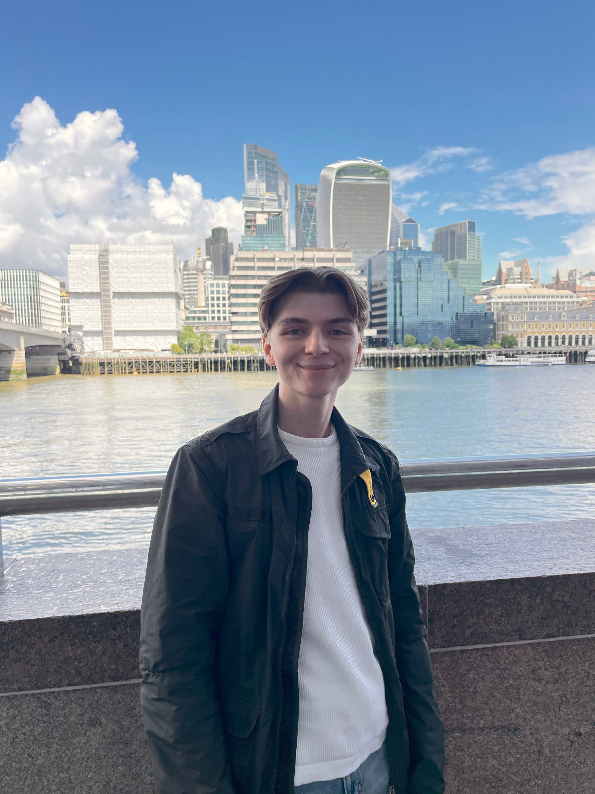

Innoaktiv
Et digitalt læringsverktøy der studenter utforsker
innovasjonsmetoder gjennom praktisk arbeid.
KREATIV DESIGNER · BERGEN
Jeg kombinerer psykologi og design for å skape digitale løsninger med
mennesket i sentrum.

Velkommen – hyggelig å ha deg her!
Jeg har en bachelorgrad i arbeids- og organisasjonspsykologi og
studerer nå medie- og interaksjonsdesign ved Universitetet i Bergen.
Kombinasjonen av psykologi og design har gitt meg et bredt
perspektiv på mennesker, organisasjoner og digitale
brukeropplevelser.
Et digitalt læringsverktøy der studenter utforsker
innovasjonsmetoder gjennom praktisk arbeid.
En leseapp for 4.–7. trinn som bruker spillelementer for å gi
elevene leselyst og mestringsfølelse.
Et digitalt verktøy der prosjektteam kan dokumentere
arbeidet sitt fortløpende og visuelt.
Redesign av SnapSeek, et søkesystem for lifelog-bilder, slik
at det blir lettere for nybegynnere å bruke.
Redesign av den visuelle identiteten til Solheim Kjøtt, en av
Bergens eldste kjøttforretninger. Skoleoppgave i grafisk
design.